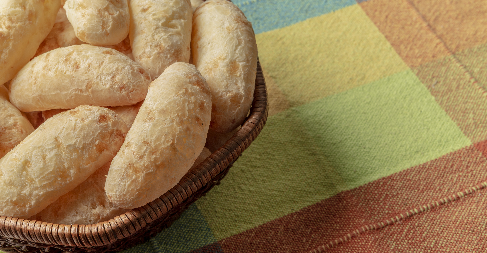

NOSSOS PRODUTOS
Sabores para todos os momentos
Uma linha completa de produtos Sabor & Minas, feita para levar o sabor de Minas para a sua mesa.

Tradicional
O clássico que nunca sai de moda.
CONHEÇA →
Multigrãos
Mais sabor e nutrição.
CONHEÇA →
Palito
Praticidade em qualquer ocasião.
CONHEÇA →
Coquetel
Ideal para receber bem.
CONHEÇA →
Mini Chipa
Todo o sabor em pequenas porções.
CONHEÇA →
Pão de Alho
Muito sabor para seus momentos.
CONHEÇA →